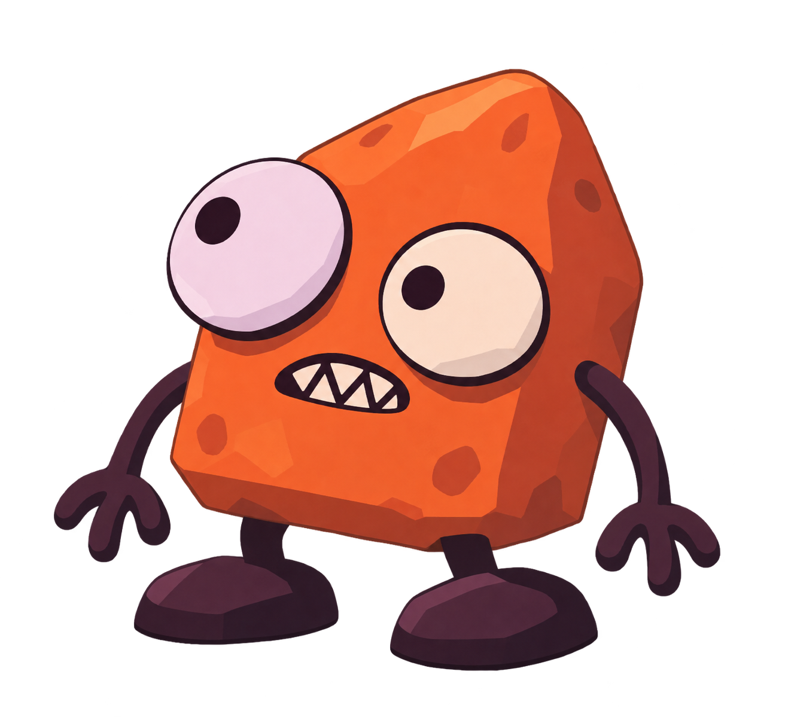

A good bounce.
A better word.
Drop marbles. Collect letters.
Build your best word.

Best played upright on your iPhone.
Progress saves in this browser. Private browsing or clearing website data may remove it.
Playtest 0.2.3-web.4
Share feedback